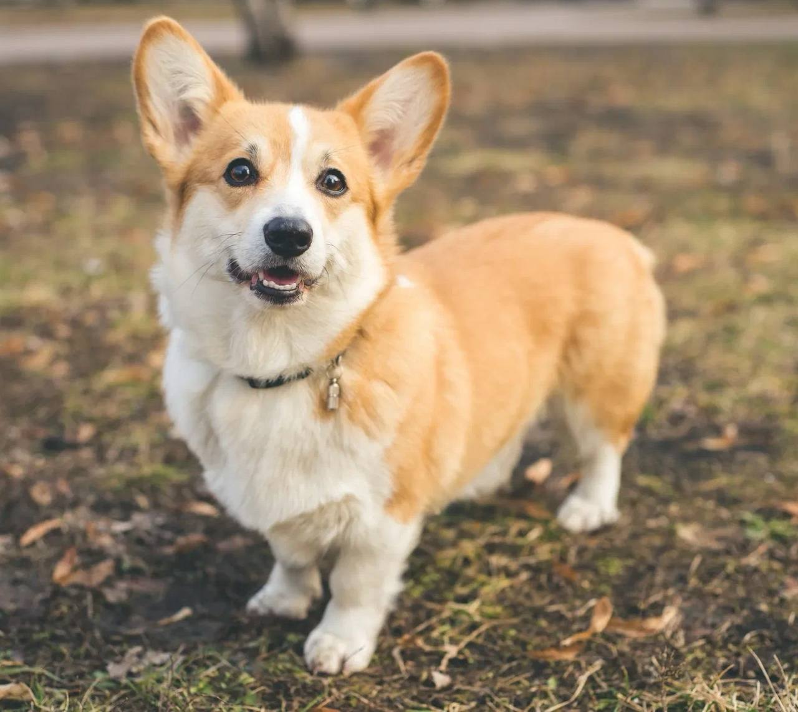

Вельш-корги пемброк

Происхождение: Уэльс (Великобритания)
Размер: Малые (рост: 25–30 см, вес: 10–13 кг)
Характер: Энергичные, умные, дружелюбные
Особенности: Короткие лапы, но очень подвижные. Любят пасти скот (могут покусывать за пятки). Хорошо ладят с детьми и другими животными
Здоровье: Проблемы с позвоночником (из-за длинного тела), ожирение